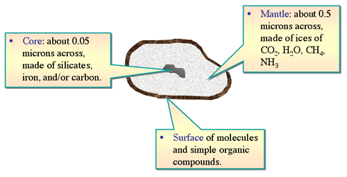
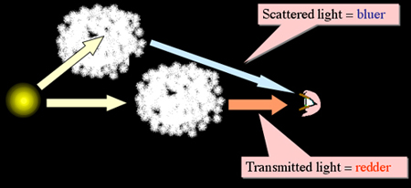
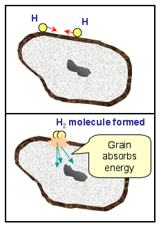
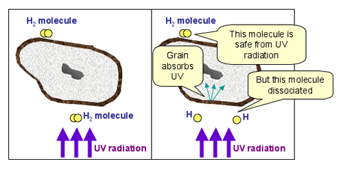
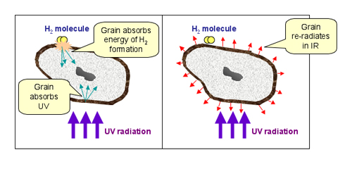

Interstellar dust grains have their origin in the material ejected by stars. They form in dense, relatively cool environments such as the atmospheres of red giant stars, and are released into the interstellar medium by radiation pressure, stellar winds or in material thrown off in stellar explosions. They generally start off as carbon or silicate grains, which later accumulate additional atoms of the most abundant elements (hydrogen, oxygen, carbon, nitrogen) to form icy mantles of water ice, methane, carbon monoxide, and ammonia. All of this is encased in a sticky outer layer of molecules and simple organic compounds created through interaction of the mantle with incoming UV light.

Typical interstellar dust grains are much smaller than the dust we are familiar with here on Earth and resemble more closely the soot from a candle flame. They are about the same size as the wavelength of blue light meaning that they absorb and scatter UV and blue light much more efficiently than red light. The result is that light passing through a dust cloud has its blue component effectively removed, making it appear redder than it would have been otherwise. This is known as interstellar reddening. It also means that light scattered off dust grains,
such as in reflection nebulae, will be blue in colour.
While dust grains make up only about 1% of the mass of the interstellar medium, they have a very important role in the formation of stars.
|
 |
Firstly, the surfaces of dust grains operate as little chemical factories, bringing together atoms that might otherwise rarely meet and catalyzing their reactions. For example, with the conditions present in molecular clouds, it is quite rare that two colliding hydrogen atoms would stick to form a molecule. However, H2 molecules can form when the atoms are attached to the sticky tar-like surface of a dust grain which is able to absorb the excess energy of the collision. |
|
 |
Secondly, dust helps to reduce the ionisation level of an interstellar gas cloud. This is important for star formation, as it is very difficult for gravity to collapse a cloud of hot ionised gas! The dust grains absorb the ionising UV radiation and protect molecules that have already formed from being destroyed by the radiation field. |
|
 |
Thirdly, dust grains keep interstellar gas clouds cool by absorbing the energy from both gas-grain collisions and UV radiation. These heated grains later re-emit the energy in the infrared and, so long as the cloud is transparent to infrared radiation, keep the cloud cool. |
All of these processes are needed within a molecular cloud so that new stars may be formed from it.